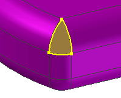
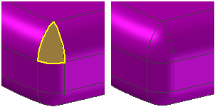

Evaluating and repairing foreign data
When you import surfaces that do not form a closed volume, they are imported as construction geometry. If the imported surfaces form a closed volume, you have the option to create a solid body.
If the imported surfaces do not form a solid body in Solid Edge, but were created as a solid body in the other CAD system, the accuracy of the data prevented it from being converted into a solid body in Solid Edge. Typically, the surface-to-surface matching tolerances used in the source system were larger than the Parasolid modeling kernel requires for successful stitching of the surfaces into a solid body. Some CAD systems allow surface-to-surface matching tolerances that are quite large, in some cases larger than the manufacturing tolerances of the manufactured part. The surface-to-surface matching tolerance requirements of the Parasolid modeling kernel are more exacting.
You can use the Geometry Inspector command to determine what problems the model has and then you can use the construction commands to modify the model to repair the problem areas. For example, there may be surfaces that did not import correctly, or there may be gaps or overlaps between individual surfaces in the model. Geometry Inspector evaluates the model and builds a list of the problem areas and provides suggestions as to how you can repair the problems.
If there are areas that did not stitch properly, you can use the Show Non-Stitched Edges command to display the non-stitched areas. You can then use the other commands on the Surfacing tab to repair the existing surfaces, or create new surfaces and stitch them into the model. You can also delete surfaces that would be easier to recreate from scratch than to repair.

Both curve and surface manipulation commands are available for creation and modification of construction elements. You can use the Derived Curve, Split Curve, Project Curve, and Intersection Curve commands to create new curves or modify existing curves. You can use the Trim Surface, Extend Surface, and Delete Face commands to modify or delete construction surfaces. You can use the Extruded Surface, Revolved Surface, Swept Surface, Lofted Surface, and Bounded Surface commands to create new construction surfaces. For example, if an imported surface overlaps another surface, you can use the Derived Curve command to extract a curve from the edge of the surface it overlaps, then use the new derived curve as input with the Trim Surface command to trim the existing surface.
If the non-stitched edges are the result of a missing surface, you can use the construction commands to create a new surface and stitch it into the model. For example, you can create an extruded, revolved, swept, and lofted construction surface to close a gap in a model.

When repairing imported data, you may need to try several approaches before finding one that succeeds. For example, if you are unsuccessful creating a revolved surface, try creating an lofted surface. The tolerance issues inherent with imported data can make model repair difficult.
After you have repaired a surface, or created a new surface, you can then use the Stitched Surface command to add the new surface to the model. If the stitched surfaces form a closed volume, you have the option to create a solid body. You can then use the solid body to complete the modeling process.
How do I
Display zebra stripes on a partDisplay curvature shading on a model
Visualize a surface
Learn more
Evaluating surfacesLook up more details
Show Zebra Stripes commandZebra Stripes Settings command
Show Curvature Shading command
Curvature Shading Settings command
Curvature Shading Settings Dialog Box
Show Draft Face Analysis command
Draft Face Analysis command bar
Draft Face Analysis dialog box
Draft Face Analysis Settings command
Surface Visualization command
Surface Visualization Settings dialog box